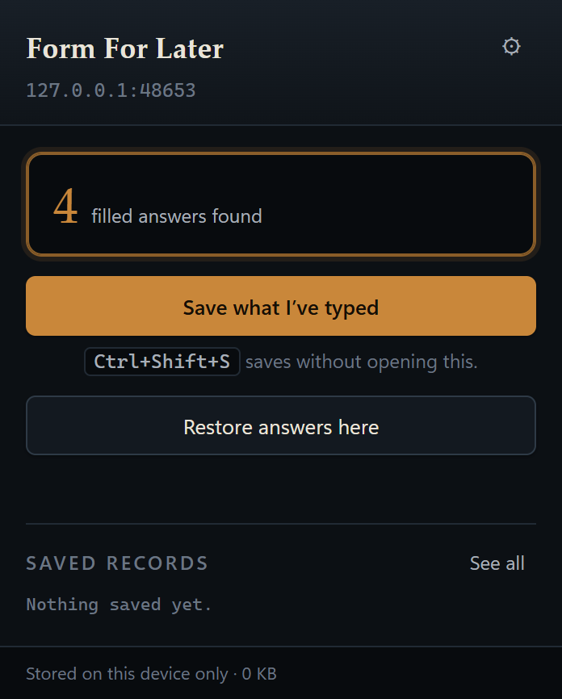
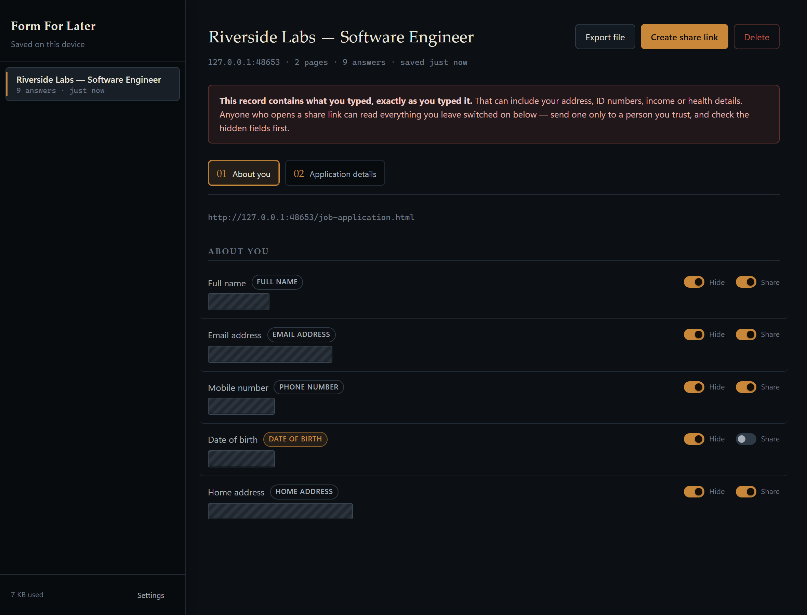
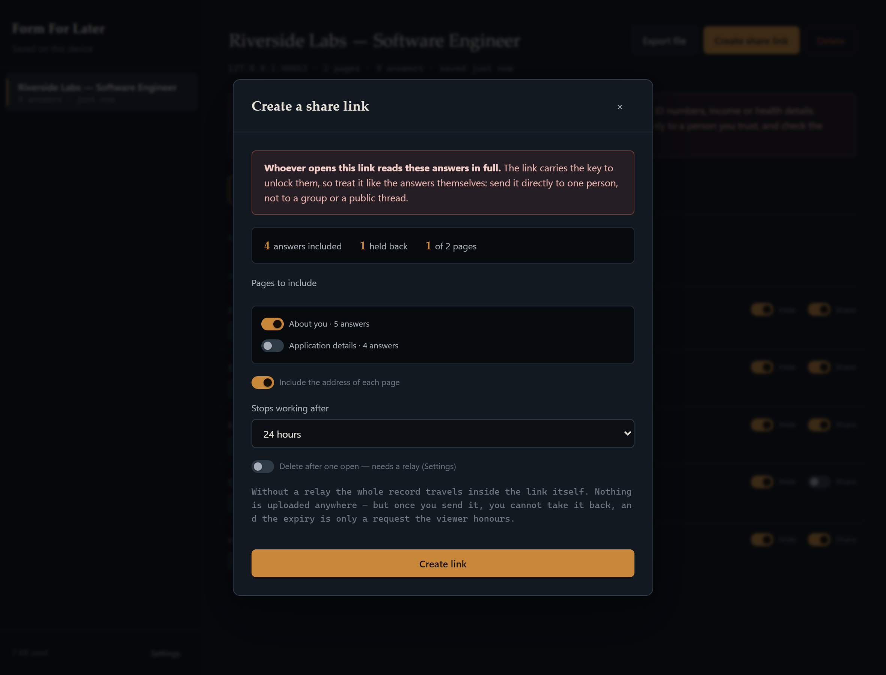

It saves what you type into long forms, right on your device. Come back whenever, and put it all back in one click.
FREE · NO ACCOUNT · YOUR DATA STAYS ON YOUR DEVICE
One click. FormForLater reads the label you can see, not just the code behind the field.
Nothing leaves your device while you're away. No timer, no pressure.
Every saved answer goes back where it was, and it tells you if it had to guess.
Every line below is backed up in the full policy, with the file and function that actually does it. Go check.
It's the page a recipient opens to read a share link. It can't read the link either — the answers and the key travel in the part of the address browsers never send anywhere. Point it at your own copy if you'd rather, or clear the setting and don't share at all.



It's in review. This button goes live the day it's approved.
CHROME 116+ · iOS: SEE ABOVE · FIREFOX: MAYBE SOMEDAY